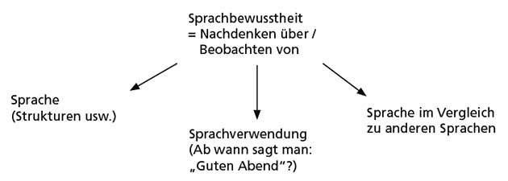
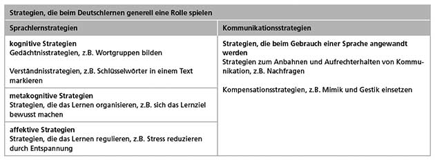
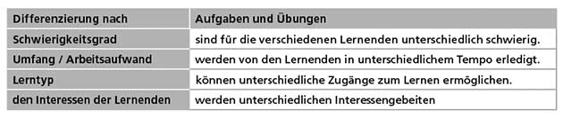

Wie lernt man Sprachen zu lernen?
3.1 Wie lernt man Sprachen zu lernen?
Thema des dritten Kapitels ist, wie man lernen kann, Sprachen zu lernen. Wir zeigen, wie man die Individualität der Lernenden im Unterricht berücksichtigen kann. Wir stellen dar, wie Lernende ihr Lernen reflektieren, wie sie immer selbstständiger und systematischer beim Lernen vorgehen und wie Sie als Lehrende diese Prozesse anleiten können. Weiter möchten wir Ihnen zeigen, mit welchen Strategien Ihre Lernenden lernen können und wie Sie sie darin unterstützen können, sich diese Vorgehensweisen anzueignen und zu üben.
Unsere Grundannahme ist dabei, dass Bewusstheit über den Lernprozess und Selbstständigkeit im Lernprozess lernförderlich sind. Ein solches Verständnis von Lernen führt uns zu den folgenden drei zentralen didaktisch-methodischen Prinzipien, die allen unseren Vorschlägen für Ihren Unterricht zugrunde liegen:
Die Lernerorientierung ist ein Prinzip des Unterrichts, das diejenigen Faktoren berücksichtigt, die wir in Kapitel 2 beschrieben haben: das Alter, die Lernmotivation, die Lernziele und die Bedürfnisse der Lernenden. Demnach muss der Unterricht so gestaltet sein, dass der Individualität der Lernenden im Unterricht Raum gegeben wird (bspw. Lerntempo). Arbeits- und Sozialformen und Lernangebote berücksichtigen die unterschiedlichen Voraussetzungen, Interessen, Stärken, Schwächen und Ziele der Lernenden. Bei der sogenannten inneren Differenzierung (oder Binnendifferenzierung) bearbeiten die Lernenden Aufgaben und Übungen, die sich in der Qualität oder Quantität unterscheiden (siehe Kapitel 3.5.1). Dadurch entstehen im Unterricht Freiräume für Selbstständigkeit. Im Sinne der konstruktivistischen Lerntheorien sollen komplexe und authentische Lernumgebungen geschaffen werden, in denen die Lernenden selbst aktiv werden.
Förderung von Autonomie: Um die Freiräume im Unterricht sinnvoll nutzen zu können, ist es wichtig, dass die Lernenden Verantwortung für ihr Sprachenlernen übernehmen und es selbstständig und zielbewusst gestalten. Voraussetzung dafür ist, dass Lernende in der Lage sind, systematisch beim Lernen vorzugehen, Lernstrategien auszuwählen und sinnvoll einzusetzen. Das wichtige didaktisch-methodische Prinzip, das dieses Anliegen verfolgt, heißt Förderung von Lernerautonomie.
Mehrsprachigkeitsorientierung: Das Prinzip Mehrsprachigkeitsorientierung berücksichtigt, dass Lernende zumeist bereits mit Sprachenkenntnissen und Sprachlernerfahrungen aus früheren Lernprozessen in den Unterricht kommen. Dieses Potenzial soll im Unterricht aufgegriffen werden.
3.2 Wie reflektiert man das eigene Lernen?
Ebenen der Reflexion: Reflexion zum Sprachenlernen kann auf drei Ebenen stattfinden: - auf der kognitiven Ebene: Was kann ich bereits auf Deutsch tun, was weiß ich schon und was ist mein nächstes Lernziel? - auf der metakognitiven Ebene: Wie lerne ich erfolgreich? Wie entwickelt sich mein Sprachenlernen? - auf der affektiven Ebene: Wie lerne ich gern?
Ziel sollte es sein, bei der Reflexion alle Ebenen gleichermaßen anzusprechen, damit die Lernenden sich selbst als Lernende besser kennenlernen.
Bewusst Sprachen lernen: In Kapitel 2.2 haben Sie erfahren, dass Bewusstheit und Aufmerksamkeit den Lernprozess positiv beeinflussen können. Wenn Lernende regelmäßig über Sprache nachdenken, eine Sensibilität für eine oder mehrere Sprachen und für die Rolle der Sprache im Alltag sowie in der Kommunikation entwickeln, spricht man von Sprachbewusstheit. Sprachbewusstheit ist ein individuelles Gefüge aus Wissen, Einstellungen und Emotionen einer Person zu Sprache/n

Förderung von Sprachbewusstheit: Die Sprachbewusstheit Ihrer Lernenden können Sie durch Aktivitäten fördern, die dazu führen, die Sprache zum einen als System zu begreifen und analytisch zu betrachten, zum anderen aber auch dazu, Besonderheiten der Sprache zu erkennen und zu verstehen:
- Eigene Annahmen über Sprache bewusst machen und überprüfen
- Sprache analysieren
- Sprachen vergleichen
- Unterschiede erklären
- Sprachspiele: Gerade die Wortbildung (z.B. Komposita) bietet sich dafür an, sich mit der Sprache zu beschäftigen. Interessant sind Wörter, die gleich klingen, aber verschiedene Bedeutungen haben, sogenannte Homonyme (Bank, Sitzen und Geld)
3.3 Wie leitet man selbstständiges Lernen an?
Wir haben das didaktisch-methodische Prinzip Förderung von Lernerautonomie zu Beginn des Kapitels bereits als wichtige Orientierung für diese Einheit genannt: Wenn Lernende in verschiedenen Bereichen die Verantwortung für ihr Lernen übernehmen und in verschiedenen Kontexten selbstständig und unabhängig sind, spricht man von Lernerautonomie.Zur Förderung von Lernerautonomie gehört,
- dass Lernende lernen, sich im Lernprozess eigene Ziele zu setzen,
- dass sie einschätzen lernen, was sie gut bzw. nicht so gut können, und
- dass Sie entscheiden lernen, wann, mit welchen Materialien und vielleicht auch mit wem sie lernen wollen.
3.4 Wie leitet man systematisches Lernen an?
Unter Lernstrategien versteht man die planvolle Vorgehensweise, die man einsetzt, um ein Ziel zu erreichen. Lernstrategien können je nach Bedarf, persönlichem Lernstil und Situation unterschiedlich sein, sie haben aber immer das Ziel, den Lernprozess zu steuern und den Lernerfolg zu erhöhen. Die konkrete Ausführung einer Strategie ist die Lerntechnik, also der sichtbare, beobachtbare Teil einer Strategie. Eine Strategie kann aus mehreren konkreten Teilhandlungen, aus Lerntechniken, bestehen. Eine Lerntechnik wäre beispielsweise das Nachschlagen im Wörterbuch.
Es gibt unzählige Typen von Strategien beim Lernen. Um den Überblick zu behalten, lassen sich die Strategien in verschiedene Gruppen einteilen. Man unterscheidet, genau wie bei den Formen der Reflexion (siehe Kapitel 3.2.1), zwischen kognitiven, metakognitiven und affektiven Sprachlernstrategien.
Kognitive Strategien sind mentale Handlungen, die dazu führen, dass Wissen und Fakten aufgenommen und gespeichert werden. Hier gibt es einerseits Gedächtnisstrategien, durch die sich die Lernenden etwas merken, z.B. Vokabeln oder grammatische Strukturen, und andererseits Verständnisstrategien, die. z.B. dabei helfen, gesprochene oder geschriebene Texte zu verstehen.
Metakognitive Strategien setzen Lernende ein, wenn sie das Lernen organisieren. Zentral sind dabei drei Bereiche: Ziele setzen, das Lernen planen und das Lernen evaluieren. Metakognitive Strategien dienen dazu, den Sprachlernprozess bewusst zu gestalten, und sind somit eng mit Sprachlernbewusstheit verbunden (Bsp.: Welche Lernumgebung, wen frage ich nach Hilfe).
Affektive Strategien sind solche Strategien, die sich auf Emotionen und Motivation beziehen. Dazu gehört, sich selbst zu motivieren (Warum lerne ich?, Was macht mir daran Spaß?) und produktiv mit Ängsten und Unsicherheiten umzugehen.
Kommunikationsstrategien: Unter Kommunikationsstrategien versteht man die Strategien, die Lernende nicht zum Lernen, sondern in der Verwendung der Sprache benutzen. Dazu gehört, wenig Angst vor Fehlern zu haben und kreativ mit der Sprache umzugehen, beispielsweise indem Platzhalter für unbekannte Wörter (Dingsda) verwendet oder neue Wörter erfunden werden (z.B. Bücherhaus für Bibliothek/Bücherei), die es zwar nicht gibt, die der Gegenüber aber oft versteht. In der folgenden Übersicht sehen Sie die verschiedenen Typen von Strategien:

Beispiele für jeden Typ von Strategie:
Lernende müssen ihrem Alter und ihrer Lernerfahrung entsprechend an Lernstrategien herangeführt werden. Das Ziel eines Strategietrainings ist, dass den Lernenden ein Repertoire an Strategien zur Verfügung steht und sie besonders solche Strategien kennenlernen, die für sie geeignet sind. Wenn Sie ein systematisches Strategietraining planen, sind für jugendliche und erwachsene Lernende die folgenden drei Schritte zu empfehlen. Für Kinder bietet es sich an, Schritt 1 auszulassen und nur Schritt 2 und 3 zu nutzen.
Bewusstmachung: Beginnen Sie das Strategietraining stets mit der Reflexion darüber, wie die Lernenden üblicherweise vorgehen. Wie schreiben sie normalerweise Texte? Wie lernen sie neuen Wortschatz? Wo liegen die Schwierigkeiten? Was hilft ihnen? Haben sie schon etwas gegen die Schwierigkeiten unternommen? Was funktioniert nicht? Sie können Ihr Strategietraining beispielsweise mit einem Gespräch über diese Fragen im Plenum oder in Kleingruppen beginnen und die Ergebnisse auf Plakaten oder an der Tafel festhalten.
Ausprobieren: Geben Sie den Lernenden im Unterricht die Möglichkeit, verschiedene Strategien auszuprobieren. Bei der Produktion von Texten können die Lernenden ihre Texte auf verschiedene Weise überarbeiten: Sie können sich z.B. gegenseitig ein Feedback geben, die Korrekturfunktion des Schreibprogramms ihres Computers benutzen oder ihren Text mit einem Beispieltext vergleichen.
Bewerten: Anschließend ist es wichtig, dass die Lernenden reflektieren, welche Strategien bei ihnen gut funktionieren und welche weniger gut. Auch über die Gründe kann man diskutieren. Hier eignen sich Reflexionsbögen, in die die Lernenden eintragen, welche Strategie erfolgreich, angenehm, zeitaufwendig oder langweilig war.
Es ist sinnvoll, in regelmäßigen Abständen noch einmal über die Strategien zu sprechen und die Lernenden daran zu erinnern, Verschiedenes auszuprobieren. Schließlich ist es erwiesen, dass man aus Gewohnheit und Bequemlichkeit gern bei jenen Strategien bleibt, die man schon immer verwendet hat. Gleichzeitig belegen Studien aber auch, dass das Sprechen über verwendete Strategien zu einem bewussteren Umgang mit Aufgaben und eigenen Leistungen führt und die Sprachlernbewusstheit fördert.
Voraussetzungen für die Selbstevaluation (Das eigene Lernen bewerten):
- Lernende müssen Kriterien für die Beurteilung einer Leistung kennen
- Lernende müssen ihre Leistungen zu den Bewertungskriterien in Bezug setzen können (realistische Selbsteinschätzung, kann ich einen Brief auf Deutsch schreiben)
- Viele neuere Lehrwerke orientieren sich eng an den Kann-Beschreibungen des Gemeinsamen europäischen Referenzrahmens.
- Checkliste (was kann ich? Was muss ich üben?)
Zusammenfassend möchten wir nun noch einmal die wesentlichen Aspekte der Selbstevaluation festhalten. Selbstevaluationen sind im Sinne des autonomen Lernens wichtig, um bisher Gelerntes zu reflektieren, um den aktuellen Wissensstand zu überprüfen und um weitere Lernschritte erfolgreich zu planen. Dabei müssen die Lernenden von der Lehrkraft schrittweise an die Selbsteinschätzung herangeführt werden. Diese Anleitung beinhaltet, dass den Lernenden verständlich gemacht wird, welche Lernziele oder Inhalte sie reflektieren sollen und dass sie die Rolle der Checklisten und die einzelnen Kriterien der Leistungsbewertung verstehen. Idealerweise sollten die Lernenden in regelmäßigen Abständen die Gelegenheit zur Selbstevaluation bekommen.
3.5 Wie schafft man Raum für Individualität und Selbstständigkeit?
Innere Differenzierung: Eine Möglichkeit, wie Sie der Individualität der Lernenden gerecht werden können, ist eine Unterrichtsgestaltung, die auf die verschiedenen Lernbedürfnisse und Kenntnisse der Lernenden eingeht. Wenn man als Lehrkraft den Lernprozess für seine Lernenden jeweils unterschiedlich gestalten muss, nennt man dies Binnendifferenzierung oder innere Differenzierung. Man bietet also Lernaktivitäten und Arbeits- und Sozialformen an, aus denen Lernende auswählen können und die sie optimal fördern. Im Mittelpunkt steht somit „die selbstbestimmte Gestaltung der Inhalte und Formen des Lernens unter ständiger Reflexion der kognitiven und sozialen Prozesse“ (Schwerdtfeger 2001, S. 105).
Eine Möglichkeit, auf die verschiedenen Voraussetzungen Ihrer Lernenden einzugehen, ist es, unterschiedlich schwierige Aufgaben und Übungen für sie bereitzuhalten (Differenzierung nach Schwierigkeitsgrad). Man kann sich aber noch andere Möglichkeiten vorstellen. Die Aufgaben könnten beispielsweise unterschiedlich umfangreich sein, sodass Lernende, die mehr Zeit benötigen, weniger umfangreiche Aufgaben erhalten müssen als Lernende, die Aufgaben schneller erledigen (Differenzierung nach Lerntempo).

- Persönliche Zugänge schaffen: Deshalb werden die Lernenden in modernen Lehrwerken oft aufgefordert, über sich selbst zu sprechen. So werden die Inhalte für alle interessanter, motivierender und die Lernenden werden als Individuen sichtbar. Oder auch über sich selbst berichten, so werden neue Inhalte leichter verknüpft.
Ein lernförderliches Arbeitsklima schaffen: Butzkamm beschreibt dieses als “die Verbindung einer freundlichen Atmosphäre, die Sicherheit und Entspannung gewährt, mit einer effizienten Klassenführung, d.h. mit zügiger, ernsthafter Arbeit, die den Aktivitätsfluss aufrechterhält und Leerlauf und Langeweile vermeidet. Der Unterricht ist klar strukturiert, unterschiedliche Techniken wechseln sich ab und sind sinnvoll aufeinander bezogen, die Schüler halten die Regeln ein und sind mit vielen Arbeitsformen vertraut.” (Butzkamm 2004, S. 273)
Umgang mit Fehlern: Auch ein konstruktiver Umgang mit Fehlern leistet einen wichtigen Beitrag zu einer lernförderlichen Arbeitsatmosphäre. Fehler sollen nicht negativ als Fehlleistung betrachtet werden, sondern es soll ihr Potenzial zum Weiterlernen wahrgenommen werden (siehe Kapitel 2.3). Dementsprechend sollte auch die Fehlerkorrektur den Lernenden nicht signalisieren, dass sie versagt haben. Vielmehr gilt es, ihnen eine konstruktive Rückmeldung zu geben.
Arbeitsformen und Instrumente für selbstständiges Lernen: Stationenlernen; Wochenplanarbeit, Lerntagebuch, Portfolio
3.6 Zusammenfassung
In Kapitel 2 dieser Einheit hatten Sie sich damit beschäftigt, wie Lernen im Allgemeinen und das Sprachenlernen im Besonderen funktioniert. Darüber hinaus haben Sie erfahren, welche individuellen Voraussetzungen und Bedürfnisse Ihre Lernenden in den Unterricht mitbringen. Im dritten Kapitel stand nun die Frage im Mittelpunkt, wie Lernende darin unterstützt werden können, das Sprachenlernen zu lernen. Damit verbunden war die zentrale Frage, wie Unterricht gestaltet werden kann, damit die Lernenden möglichst selbstständig werden und auch über den Unterricht hinaus erfolgreich weiterlernen können.
Ein erster Schritt zu erfolgreicherem Lernen stellt das Nachdenken über Sprachen und über das Sprachenlernen dar. Sprachbewusstheit beschreibt die Sensibilität für eine oder mehrere Sprachen und ihre Verwendung, Sprachlernbewusstheit bezieht sich auf die Sensibilität für den eigenen Lernprozess.
Nur durch die Bewusstmachung auf verschiedenen Ebenen können die Lernenden über den Unterricht hinaus ihr eigenes Lernen besser einschätzen und dieses dadurch in Zukunft auch selbst planen und gestalten. Dabei gilt es zu bedenken, dass das Reflektieren erst gelernt werden muss. Besonders jüngere Lernende dürfen nicht überfordert werden und brauchen eine kleinschrittige Anleitung. Hilfreich ist es, wenn die Reflexionsaufgaben so eng wie möglich an die Lernaktivitäten im Unterricht angebunden sind, damit über konkrete Inhalte und Situationen gesprochen werden kann. Die Klage vieler Lehrender, dass Reflexionen im Unterricht viel Zeit kosten, ist berechtigt. Allerdings lohnt es sich, diese Zeit zu investieren, da es gleichzeitig eine Zeiteinsparung bedeutet, wenn Lernende sich selbst und ihren Lernprozess gut kennen und so effektiver arbeiten. Außerdem müssen Reflexionen nicht sehr aufwendig sein. Häufig reichen schon kurze Aktivitäten aus, um bei den Lernenden neue Denkprozesse zu initiieren.
In diesem Kapitel haben Sie außerdem viele Beispiele für Lernaktivitäten, Arbeitsformen und Instrumente für selbstständiges Lernen kennengelernt. Lernenden kommt in einem solchen Unterricht mehr Verantwortung zu. Sie müssen sich selbst Ziele setzen, die eigenen Lernleistungen evaluieren und diejenigen Lernstrategien auswählen und einsetzen, die zu ihnen passen. Dazu müssen sie oft erst angeleitet werden. Das ist die zentrale Aufgabe der Lehrkraft. Sie sollten sich deshalb etwas Zeit nehmen, die jeweiligen Entscheidungen der Lernenden gemeinsam zu besprechen, und den Lernenden in allen Phasen beratend zur Seite stehen.
Die Lernenden benötigen auch Freiräume, in denen sie selbstständig und entsprechend ihren Bedürfnissen arbeiten können. Diese Freiräume können beispielsweise in Form einer inneren Differenzierung oder auch in Freiarbeitsphasen (im Rahmen des Stationenlernens oder der Wochenplanarbeit) entstehen. Die Lernenden werden dazu angeleitet, diese Freiräume sinnvoll zu nutzen. Selbstständiges Lernen heißt jedoch nicht, allein zu lernen. Vielmehr muss es möglich sein, dort, wo es nötig ist, die Unterstützung der Lehrerin / des Lehrers einzufordern.
Mit dem Stationenlernen, der Wochenplanarbeit, dem Lerntagebuch und der Portfolioarbeit haben Sie vier Möglichkeiten kennengelernt, den Unterricht zu öffnen und die Lernenden anzuleiten, individuelle Lernwege zu beschreiten und dadurch ihre Lernfähigkeit zu verbessern. Dafür ist es wichtig, eine angstfreie Unterrichtsatmosphäre zu schaffen.
Ihre Rolle als Lehrkraft verändert sich hier natürlich, indem Sie sich stärker zurücknehmen und den Lernenden mehr betreuend und beratend zur Seite stehen. Achten Sie auch hier wie bei der Reflexion und Selbstevaluation immer darauf, Ihre Lernenden langsam an neue Arbeitsformen heranzuführen. Bei zu großen Schritten kann es schnell zu einer Überforderung kommen.